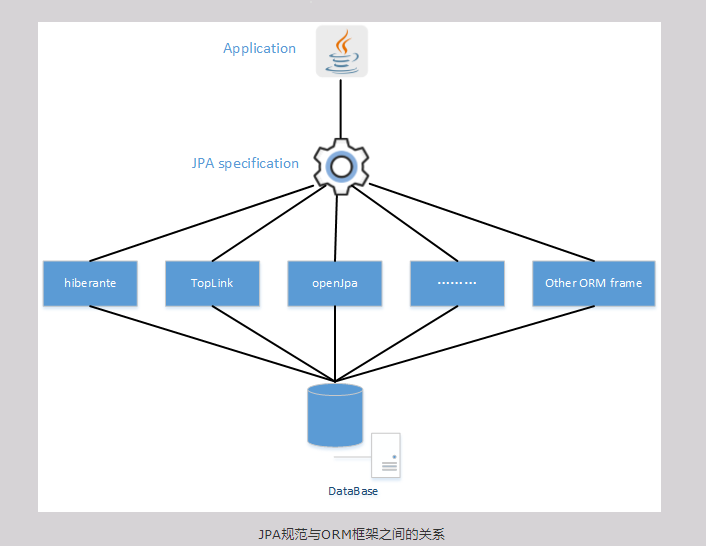
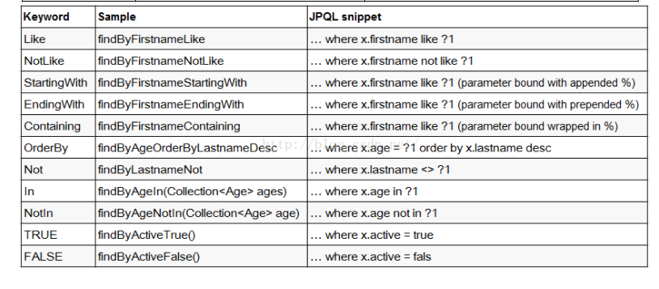
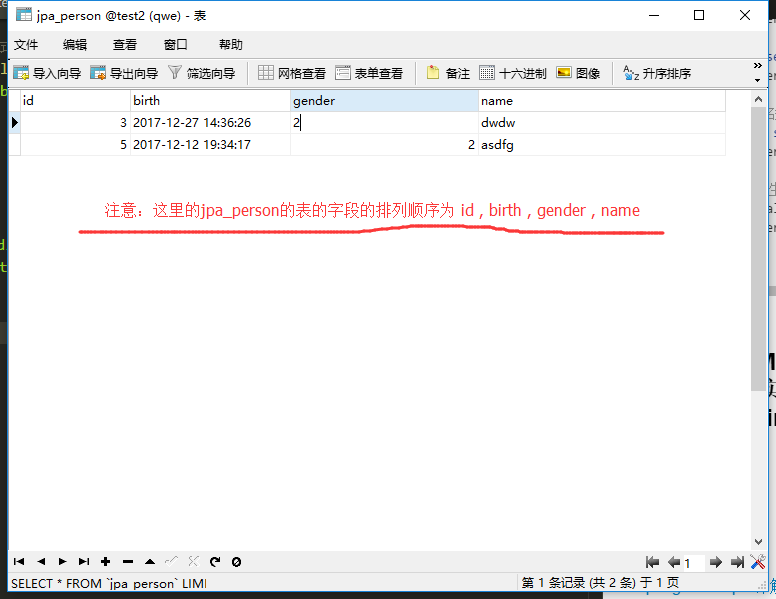

- Spring Date JPA
Spring Date JPA
1. 概述：
JPA( JPA规范 )和Hibernate的关系：
JPA,又可以叫做JPA规范。其本质上就是一种ORM规范，注意不是ORM框架——因为JPA并未提供ORM实现，它只是制订了一些规范，提供了一些编程的API接口，但具体实现则由用用服务器厂商来提供实现。例如：JBoss应用服务器底层就以Hibernate作为JPA的实现。
既然JPA作为一种规范——也就说JPA规范中提供的只是一些接口，显然接口不能直接拿来使用。虽然应用程序可以面向接口编程，但JPA底层一定需要某种JPA实现，否则JPA依然无法使用。
JPA规范的出现，其目的是统一各种ORM框架的规范，包括著名的Hibernate、TopLink等。当开发者面向JPA规范的接口，但底层的JPA实现可以任意切换：觉得Hibernate好的，可以选择Hibernate的JPA实现；觉得TopLink好的，可以选择TopLink的JPA实现……这样开发者可以避免为使用Hibernate学习一套ORM框架，为使用TopLink又要再学习一套ORM框架。

JPA和Hibernate的关系就像JDBC和JDBC驱动的关系。
jdbc 是Java 提供的数据库连接接口，该接口没有实现类。其接口的实现类（ jdbc 驱动 ）由每个数据库厂商提供。
JDBC(Java DataBase Connectivity) 是 sun 公司统一不同数据库与Java之间连接的规范。
JDBC访问数据库的主要工作：
- 得到JDBC驱动程序
- 使用DriverManager，Connection，Statement，ResulrSet等；
JPA是规范，该规范提供的只是一些接口，没有实现类。Hibernate除了作为ORM框架之外，它也实现JPA规范
JPA(Java Persistence API),java 持久性API。是sun 公司统一不同的ORM框架中的DAO层,Service层的写法（业务逻辑层次的写法）的规范。
JPA当问数据库主要工作
- 得到JDBC驱动程序
- 得到持久性提供者相关类库和配置文件
- 提供实体类
- 使用Persistence、EntityManagerFactory和Entity等接口。
Spring Data JPA与JPA (JPA规范)的关系
- Spring Data JPA 是在JPA规范的基础下提供了Repository层的实现。
- 虽然ORM框架都实现了JPA规范，但是在不同ORM框架之间切换是需要编写的代码有一些差异，而通过使用Spring Data Jpa能够方便大家在不同的ORM框架中间进行切换而不要更改代码。并且Spring Data Jpa对Repository层封装的很好，可以省去不少的麻烦。

2.第一个Spring Data JPA：
参考链接：
①：配置spring ，JPA。
1.导入jar 包到工程文件的classpath 下：
-
加入spring的全部jar包：
路径： spring-framework-4.3.8.RELEASE\libs
-
添加spring data 的jar包：
spring-data-commons-1.13.7.RELEASE.jar
spring-data-jpa-1.11.8.RELEASE.jar
注意：spring-data-commons 2.0及其以上的的版本是要支持spring framework 5。
-
添加slf4j日志包（SpringData使用slf4作为日志框架）：
slf4j-api-1.7.25.jar
-
导入hobernate 需要的jar包：
需要的jar包所在是路径：hibernate-release-5.2.12.Final\lib\required
-
导入hibernate的 JPA的jar包： hibernate-jpamodelgen-5.2.12.Final.jar
路径： hibernate-release-5.2.12.Final\lib\jpa-metamodel-generator
-
加入 C3P0数据源 jar包：
路径：hibernate-release-5.2.12.Final\lib\optional\c3p0
- 加入MySQL驱动包：
mysql-connector-java-5.1.42-bin.jar
2.配置spring 与JPA 的配置文件：
applicationContext.xml
<?xml version="1.0" encoding="UTF-8"?> <beans xmlns="http://www.springframework.org/schema/beans" xmlns:p="http://www.springframework.org/schema/p" xmlns:jpa="http://www.springframework.org/schema/data/jpa" xmlns:mybatis="http://mybatis.org/schema/mybatis-spring" xmlns:xsi="http://www.w3.org/2001/XMLSchema-instance" xmlns:mvc="http://www.springframework.org/schema/mvc" xmlns:context="http://www.springframework.org/schema/context" xmlns:tx="http://www.springframework.org/schema/tx" xsi:schemaLocation="http://www.springframework.org/schema/mvc http://www.springframework.org/schema/mvc/spring-mvc-4.3.xsd http://www.springframework.org/schema/beans http://www.springframework.org/schema/beans/spring-beans.xsd http://www.springframework.org/schema/tx http://www.springframework.org/schema/tx/spring-tx-4.3.xsd http://www.springframework.org/schema/context http://www.springframework.org/schema/context/spring-context-4.3.xsd http://mybatis.org/schema/mybatis-spring http://mybatis.org/schema/mybatis-spring.xsd http://www.springframework.org/schema/data/jpa http://www.springframework.org/schema/data/jpa/spring-jpa.xsd"> <!-- 配置c3p0数据源 --> <bean id="dataSource" class="com.mchange.v2.c3p0.ComboPooledDataSource"> <property name="driverClass" value="com.mysql.jdbc.Driver"/> <property name="jdbcUrl" value="jdbc:mysql://localhost:3306/test2"/> <property name="user" value="root"/> <property name="password" value="123456"/> </bean> <!-- 配置jpa的EntityManagerFactory --> <bean id="entityManagerFactory" class="org.springframework.orm.jpa.LocalContainerEntityManagerFactoryBean"> <!-- 指定数据源 --> <property name="dataSource" ref="dataSource"/> <!-- 指定Jpa持久化实现厂商类,这里以Hibernate为例 --> <property name="jpaVendorAdapter"> <bean class="org.springframework.orm.jpa.vendor.HibernateJpaVendorAdapter"/> </property> <!-- 指定扫描@Entity等注解的实体类包路径 --> <property name="packagesToScan" value="com.entity"/> <!-- 指定JPA属性；如Hibernate中指定是否显示SQL的是否显示、方言等 --> <property name="jpaProperties"> <props> <prop key="hibernate.dialect">org.hibernate.dialect.MySQL5InnoDBDialect</prop> <!-- 生成数据表的列的生存策略 --> <prop key="hibernate.ejb.naming_strategy">org.hibernate.cfg.ImprovedNamingStrategy</prop> <prop key="hibernate.show_sql">true</prop> <prop key="hibernate.format_sql">true</prop> <prop key="hibernate.hbm2ddl.auto">update</prop> </props> </property> </bean> <!-- 配置 Jpa事务管理器 --> <bean id="transactionManager" class="org.springframework.orm.jpa.JpaTransactionManager"> <property name="entityManagerFactory" ref="entityManagerFactory"/> </bean> <!-- 开启注解事务 --> <tx:annotation-driven transaction-manager="transactionManager"/> <!--配置springdata , 重要配置：启用扫描并自动创建代理的功能, 要加入jpa的命名空间 base-package ：扫描Repository bean的路径，并注入到ioc容器中 --> <jpa:repositories base-package="com.entity" entity-manager-factory-ref="entityManagerFactory"/> </beans>
②：在spring的配置文件中配置Spring Data
在spring的配置文件applicationContext.xml中添加代码：
<!--配置springdata , 重要配置：启用扫描并自动创建代理的功能, 要加入Spring data jpa的命名空间 base-package ：扫描Repository bean的路径，并注入到ioc容器中 --> <jpa:repositories base-package="com.entity" entity-manager-factory-ref="entityManagerFactory"/>
注意：在配置文件中加上Spring Date JPA 的命名空间。
xmlns:jpa="http://www.springframework.org/schema/data/jpa"
http://www.springframework.org/schema/data/jpa
http://www.springframework.org/schema/data/jpa/spring-jpa.xsd
③：声明持久化接口，该接口必须继承 Repostory
1.创建持久化类：
Person.java
package com.entity; import java.util.Date; import javax.persistence.Entity; import javax.persistence.GeneratedValue; import javax.persistence.Id; import javax.persistence.Table; import org.springframework.stereotype.Repository; /* * @Entity注释指名这是一个实体Bean， * @Table注释指定了Entity所要映射带数据库表，其中@Table.name()用来指定映射表的表名。 * 如果缺省@Table注释，系统默认采用类名作为映射表的表名。 * * */ @Table(name="jpa_Person") @Entity public class Person { /* * @Id 标注用于声明一个实体类的属性映射为数据库的主键列。 * @GeneratedValue 用于标注主键的生成策略（ 这是默认选项 ： @GeneratedValue(strategy=GenerationType.AUTO) ）， * * */ @GeneratedValue @Id private Integer id; private String name; private Integer gender; private Date birth; public Person(){} public Integer getId() { return id; } public void setId(Integer id) { this.id = id; } public String getName() { return name; } public void setName(String name) { this.name = name; } public Integer getGender() { return gender; } public void setGender(Integer gender) { this.gender = gender; } public Date getBirth() { return birth; } public void setBirth(Date birth) { this.birth = birth; } @Override public String toString() { return "Person [id=" + id + ", name=" + name + ", gender=" + gender + ", birth=" + birth + "]"; } }
2.创建持久化类的接口，该接口必须继承 Repostory。 注意:类与接口放在一起。
PersonRepsotory.java
package com.entity; import org.springframework.data.repository.Repository; import org.springframework.data.repository.RepositoryDefinition; public interface PersonRepsotory extends Repository<Person, Integer>{ public Person getById(Integer id); }
④：test：
public class test { public static void main(String[] args) { ApplicationContext app = new ClassPathXmlApplicationContext("applicationContext.xml"); PersonRepsotory personRepsotory = app.getBean(PersonRepsotory.class); Person person = personRepsotory.getById(1); System.out.println(person); } }
控制台打印结果：
``` Hibernate: select person0_.id as id1_0_, person0_.birth as birth2_0_, person0_.gender as gender3_0_, person0_.name as name4_0_ from jpa_Person person0_ where person0_.id=?Person [id=1, name=xiaoming, gender=1, birth=2017-12-15 14:01:58.0]
<h2>⑤：分析</h2>
`<jpa:repositories base-package="com.entity" entity-manager-factory-ref="entityManagerFactory"/>`
1. 当spring初始化时，会扫描 base-package 指定的包目录及其子目录，当扫描到继承 Repository 接口的 接口对象时，会为该接口对象创建代理对象并注入到 IOC 容器中。
___
```java
public interface PersonRepsotory extends Repository<Person, Integer>{
public Person getById(Integer id);
}
- Repository 是一个空接口，不含任何方法。Spring data 也可以是实现Repository的其他子接口，这些子接口定义了一些CRUD 方法或分页查询的方法。
3.继承Repository 接口 或 实现@RepositoryDefinition 注解：
1.继承Repository 接口:
package com.entity; import org.springframework.data.repository.Repository; import org.springframework.data.repository.RepositoryDefinition; public interface PersonRepsotory extends Repository<Person, Integer>{ public Person getById(Integer id); }
- Repository 是一个空接口，其中没有任何实现方法。
- 当我们编写的接口继承 Repository 时。当spring 的ioc 容器开启时，若在 spring的配置文件中编写如下配置。
<jpa:repositories base-package="com.entity" entity-manager-factory-ref="entityManagerFactory"/>
- IOC 容器会扫描 base-package 指向的路径，若扫描到继承 Repository接口的类，ioc 容器会把它标记为 Repository bean 。
- 被标记为Repository bean，会被注入到ioc 容器中。
- 继承 Repository的接口，需要在其中编写 具有一定规范的方法。
2.实现@RepositoryDefinition 注解:
@RepositoryDefinition(domainClass=Person.class,idClass=Integer.class) public interface PersonRepsotory{ public Person getById(Integer id); }
3.Repsotory的子接口:
①：CrudRepsotory : 继承自Repsotory， 实现了一组CRUD的方法。
②：PagingAndSortingRepsotory : 继承自CrudRepsotory， 实现了一组分页排序的方法。
③：JpaRepsotory : 继承自PagingAndSortingRepsotory ，实现了一组jpa规范的方法 。
④：自定义的 XxxRepsotory : 需要继承JpaRepsotory,这样该自定义的接口，就具备通用的数据访问控制层的能力。
⑤：JpaSpecificationExecutor : 不属于Repsotory 的体系。可实现一组JPA Criteria 查询相关的方法。
4.在XxxRepsotory 接口中编写CRUD方法（CRUD方法编写具有一定的规则）：
Spring data jpa支持的关键字：


1.使用关键字的方式定义方法名：
@Table(name="jpa_Person") @Entity public class Person { @GeneratedValue @Id private Integer id; private String name; private Integer gender; private Date birth; public Person(){} //省略get/set/toString() 方法。 }
1. 查询方法必须以 find | read | get 开头。
2. 当涉及到条件查询时，属性的首字母大写，并且若有多个属性，则必须以关键字相连接。
例子：
public interface PersonRepsotory extends Repository<Person, Integer>{ //通过id查询 对象 , where id=？1 public Person getById(Integer id); //条件查询，以name ，gender 为条件 ~where name=？1 and gender=?2 public Person getByNameAndGender(String name,Integer gender); // where name like %？1 and gender < ?2 public List<Person> getByNameEndingWithAndGenderLessThan(String name,Integer gender); // where name in (?1,?2,?3,~) public List<Person> getByNameIn(List<String> name); }
2.使用 @Query 注解的方式（可以用自定义 JPQL 语句来实现更为复杂的查询）：
JPQL语句： 类似于SQL 语句，只不过SQL语句查询是通过表名，字段名。而JPQL语句查询通过 实体类名与其属性名。
注意：-
JPQ语句中，实体名和属性区分大小写，保留关键字不区分大小写。
-
@Param注解的包是在：org.springframework.data.jpa.repository.Query;
-
向@Query 注解传递参数有两种： ①占位符 ？。 ②命名参数+@Param 注解 。 ③：使用原生sql语句来查询。
public interface PersonRepsotory extends Repository<Person, Integer>{ /* * 1. 为@Query 注解传递参数方法一: 使用占位符 ？ ，注意 第一个占位符 是 ?1 ,第二个占位符是 ?2 。 * * 2. 为@Query 注解传递参数方法二: 使用命名参数的方式。 * * @Query(" select p from Person p where id =:id") public Person getbY_ID_by_Param(@Param("id") Integer id); * * @Param作用是， 指定 Integer id 是 @Query注解中的 id * * 3. 在@Query 注解中可以编写原生的 SQL 语句来查询结果。jpa_person是表名 * nativeQuery=true ：表面@Query注解的内容是原生sql语句。 * * @Query(value=" select * from jpa_person where id = ? ",nativeQuery=true) public Person getbY_ID_by_Param2(Integer id); * * */ @Query("select p from Person p") public List<Person> getAll(); @Query("select p from Person p where id= ?1 ") public Person getby_id(Integer id); @Query("select p from Person p where name= ?1 and gender=?2 ") public Person getbyname_and_gender(String name,Integer gender); @Query("select p from Person p where name like %?1% and gender < ?2 ") public Person getby_name_and_gender(String name,Integer gender); //使用命名参数的方式查询 @Query(" select p from Person p where id =:id") public Person getbY_ID_by_Param(@Param("id") Integer id); // 使用原生SQL的方式查询 @Query(value=" select * from jpa_person where id = ? ",nativeQuery=true) public Person getbY_ID_by_Param2(Integer id); }
3.使用 @Query,@Modifying,@Transactional注解来实现update, delete（springdata 的jpql语句不支持 insert，但可以用sql的方式编写insert）：

PersonRepsotory.java
public interface PersonRepsotory extends Repository<Person, Integer>{ /* * 1. 使用 @Modifying 进行修饰. 以通知 SpringData， 这是一个 UPDATE 或 DELETE 操作 。 * 由于update ,delete 操作涉及到修改数据库的数据，所以要使用 @Transactional注解，用于开启事务，提交事务。 * * 2. 可以选择在@Query 注解中写入 原生sql的方式来实现 insert ，update， delete * */ @Transactional @Modifying @Query("UPDATE Person set name=?1 where id=?2") public int update_name(String name,Integer id); @Transactional @Modifying @Query("delete from Person where id=?1") public int delete_PersonByid(Integer id); //使用原生sql语句的方式进行update @Transactional @Modifying @Query(value="update jpa_person set name=? where id=?",nativeQuery=true) public int update_name2(String name,Integer id); //使用原生sql语句的方式进行 delete @Transactional @Modifying @Query(value="delete from jpa_person where id=?",nativeQuery=true) public int delete_PersonByid2(Integer id); //使用原生sql语句的方式进行insert , 注意 sql语句的参数的顺序 需要与 数据库中表的字段的顺序对应 @Transactional @Modifying @Query(value="insert into jpa_person values(?,?,?,?)",nativeQuery=true) public int insertPerson(Integer id,Date birth,Integer gender,String name); //使用原生sql语句的方式进行insert ,注意 这里在sql语句中指定了参数的排列顺序 @Transactional @Modifying @Query(value="insert into jpa_person(id,name,gender,birth) values(?,?,?,?)",nativeQuery=true) public int insertPerson2(Integer id,String name,Integer gender,Date birth); }
test.java:
public class test { public static void main(String[] args) { ApplicationContext app = new ClassPathXmlApplicationContext("applicationContext.xml"); PersonRepsotory personRepsotory = app.getBean(PersonRepsotory.class); int a=personRepsotory.update_name("xiaoming", 3); int b=personRepsotory.update_name2("xiaoho",44); int c=personRepsotory.delete_PersonByid(2); int d=personRepsotory.delete_PersonByid2(3); int e=personRepsotory.insertPerson(22, new Date(), 1, "ssssss"); int f=personRepsotory.insertPerson2(334,"xx",2,new Date()); } }注意:
①：由于update ,delete，insert 操作涉及到修改数据库的数据，所以要使用 @Transactional注解，提交事务。
②：当使用insert 增加数据库时，若sql语句中没有指定参数顺序，那么参数顺序需要与数据库中表的字段的顺序对应。
没有指定参数顺序：
insert into jpa_person values(?,?,?,?)
指定了参数顺序：
insert into jpa_person(id,name,gender,birth) values(?,?,?,?)